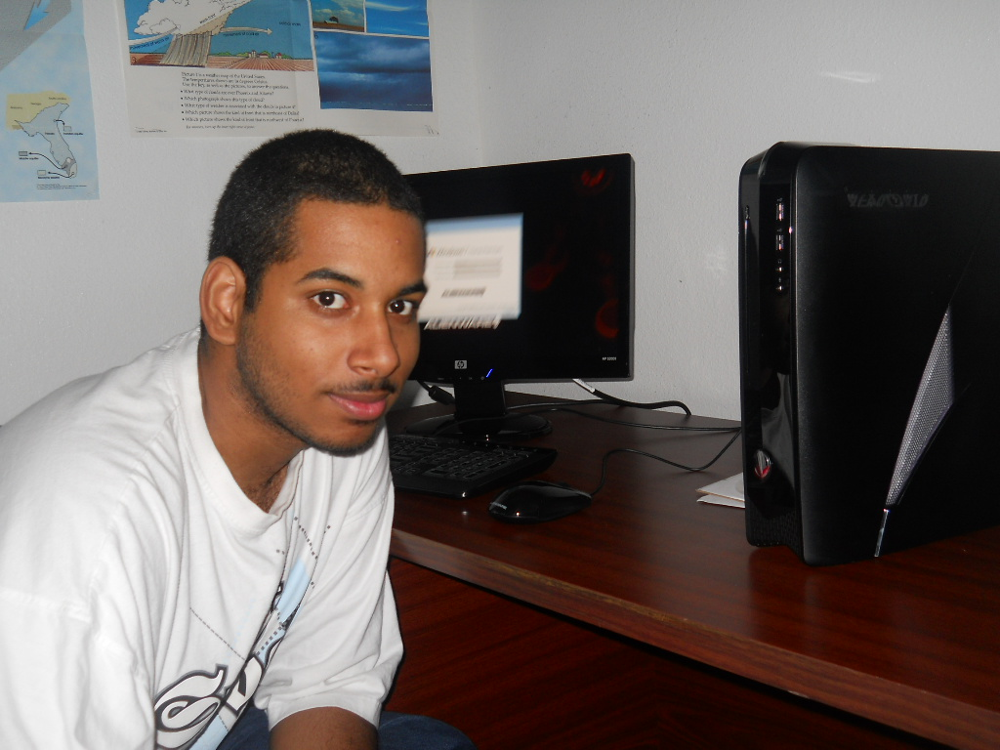
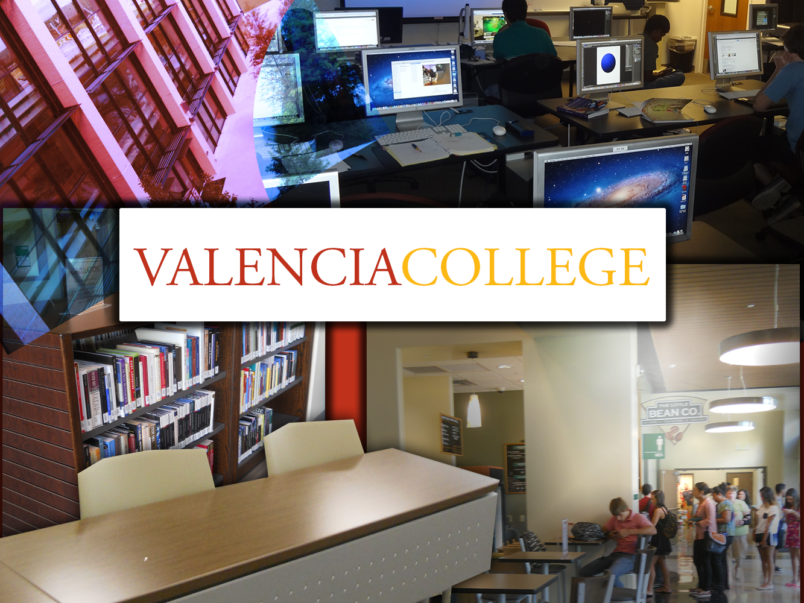

|| ~ WELCOME SUMMARY ~ ||
Intro to Digital Media and Design is an amazing class at Valencia College that prepares you for any career that you are taking involving our universe with digital media, by designing images, audio, and videos! It teaches you the basics from the professional Adobe programs which are quite easy to learn and very powerful to use. As you take the course, you will be learning a bit of everything bit by bit, until you make it to your Final Project which puts all that together. This is proof of that Final Project as this is it. In this website you will be able to see examples of all the things learned in this class. Also information on the student that worked on them. You can navigate through the website by clicking on the menu buttons. Thank you for visiting, please enjoy!
|| ~ ABOUT ME ~ ||

Hi, my name is Joshua Peralta. I was born in Puerto Rico, March 23 1994, and lived there for 12 years, although my family has been there since 1984. When I started school, I started at home, with the home-schooling program, with my mother as teacher. I've been home-schooled my whole life, up till I enter college. In 2006 we moved to Orlando Florida and have been living there ever since. I was still home-schooled, but in high school I joined the online FLVS and then Connexus home-schooling programs. In March 22, 2009 I got baptized and became a Christian. When I finished High School at 18, I went to college in Valencia. That was my first experience of taking classes out of my house by myself. I've never been the type of person to socialize, so this was quite something new. Although I'm much of a nerd guy, you can always or mostly find me in the computer or on my gaming consoles. I did alright on the first semester, getting myself up in the Dean's Honor Students. I finished the second semester and this is the end of the third semester, with this site as my Final.
If you would like to keep in touch with me for more information or other things, here are a few of my accounts listed below.
|| ~ IMAGE PROJECT ~ ||

This is the Image Project which was edited by using Adobe Photoshop. In this collage a bunch of different pictures were taken and put together as a collage to represent a day in Valencia College. With all the different effects that Photoshop offers you, images can look amazing when edited. To go back to the top of the page, click here.